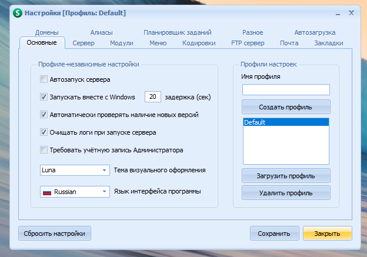

Настройка Open Server
Сама инсталляция на столько простая и понятная что описывть ее я не вижу смысла. В данном блоке будет описан сам процесс настройки панели управления сервером. Итак поехали. В трее будет иконка флажка красного цвета, нажимаем ПКМ и попадаем в настройки
1) Можно включить автозапуск программы и автозапуск сервера, а так же выбрать тему. Все просто!
В пункте IP Адрес, выбираем все доступные IP, что бы безпрепятственно прокинуть алиас на сайт о котором немного позже.
В модулях рекомендую выбрать последнюю версию PHP, это 7.1, а под нее HTTP сервер Apache + Nginx последней версии. Реляционную СУБД можно использовать на свой вкус, это либо MongoDB, либо MySQL. В данном блоке будет пример, как выглядит СУБД MySQL
В данном пункте можно к примеру выбрать какой браузер будет открывать ваши сайты, либо всем известную ПУ PhpMyAdmin для управления СУБД MySQL, а так же можно выбрать какой текстовой редактор будет открывать конфигурационные файлы модулей.
Рекомендуемая кодировка - UTF-8, для MySQL не трогаем.
В Open Server так же можно запустить ftp сервер, для локального использования, либо удаленного доступа к файлам при имеющемся белом IP адресе. (О том как вывести свой локальный сервер в интернет, вы можете найти в гугле. Здесь такой информации нет. Здесь базовые настройки панели.)
В данной вкладке можно настроить/привязать почтовый сервер, для работы с почтой и тестирования почтовых форм в своих проектах
Для локального использования сервера, оставляем все как есть.
Для того что бы сайт открывался так как назван ваш проект в корне OS, к примеру test1.ru - необходимо узнать свой локальный IP адрес, сделать это можно в интерпретаторе командных строк, введите команду ipconfig и скопируйте IP адрес в начальный домен, а конечным выбирете проект который должен открываться. В итоге упрощенный запуск проекта из трея + возможность запуска в локальной сети (со смартфонов, ноутбуков подключенных к одному роутеру, к которому подключен ваш ПК с вашим сервером)

Логи сервера
Общий лог сервера. Запуск/остановка. Открыть лог можно из треяЛог запросов к серверу Apache
Реляционная СУБД MySQL
Стартовая страница СУБД MySQLВ качестве редактора кода, можете использовать любой на ваш вкус! Brackets, WebStorm, Sublime Text 3, Notepad++ и др.